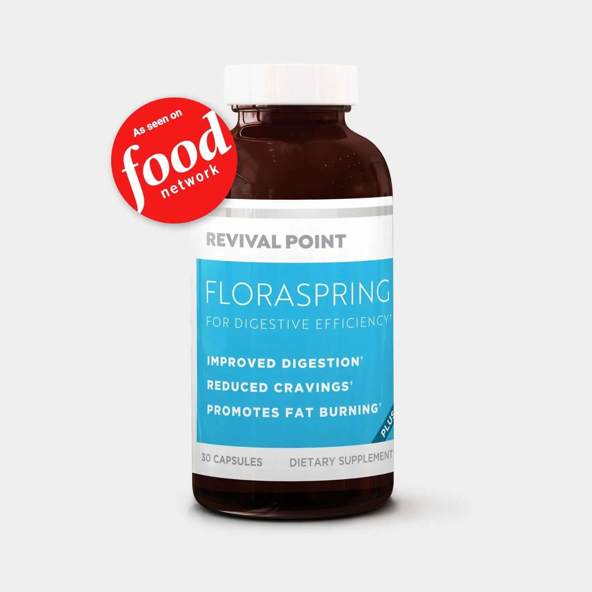

FloraSpring Scam or Legit? The Shocking Truth Exposed (2026 Review)

Click Here to Check Official Batch Availability →| Product Name: | FloraSpring |
| Editorial Score: | 4.8 / 5.0 ⭐⭐⭐⭐⭐ |
| Primary Purpose: | Targeted Bioactive Health & Vitality Formula (Natural Health & Dietary Supplement) |
| Manufacturing / Delivery: | c-GMP Certified, FDA-Registered Facility (USA) |
| Guarantee Shield: | 100% Risk-Free Money-Back Guarantee |
| Official Portal: | Verified Direct Manufacturer Website → |
Floraspring Reviews – Is it efficient? Experts Advice
Floraspring is a probiotic supplement featuring 5 primary active active components that help increase fat burning, improve digestion, and prevent the growth of harmful bacteria.
Most of the Floraspring reviews have been majorly positive, with an average rating of 4.5/5.
What is Floraspring?
Floraspring is a probiotic supplement recognized for its potential benefits in supporting weight loss, improving gut health, and reducing cravings for junk food.
This innovative product leverages the power of probiotics, beneficial bacteria that promote a healthy gut microbiome. Floraspring is formulated to enhance the connection between gut health and weight management.
Optimizing the balance of good bacteria in the digestive system aims to impact overall health and well-being positively. The supplement’s use of probiotics helps improve digestive functions, maximize metabolism, and facilitate better nutrient absorption.
What sets Floraspring apart is its focus on specific probiotic strains linked to weight management and metabolic health. This targeted approach makes it more efficient than generic probiotic supplements, as it addresses the unique needs of those aiming for a healthier weight and enhanced metabolic function.
Additionally, Floraspring is marketed as a natural, science-based solution for customers looking to improve their digestive health and manage their weight. By tapping into the potential of the gut microbiome, Floraspring supports the growing research highlighting the critical role of gut health in overall wellness.
In summary, Floraspring offers a promising option for those seeking to improve their health by nurturing the gut ecosystem with probiotics.
Its targeted formulation supports weight management and metabolic health, reflecting its potential benefits and efficacy in promoting overall wellness.
How Does Floraspring Work?
Floraspring is a clinically proven supplement formulated to address obesity at its root causes: slowed metabolism and poor gut health. An imbalanced gut, lacking sufficient beneficial bacteria, can lead to digestive issues.
Floraspring targets metabolism and digestive health to enhance nutrient absorption, helping you maximize the benefits of every nutrient, vitamin, and mineral you consume.
This not only aids in weight loss but also combats oxidative stress, contributing to a more youthful appearance. As a weight-loss product, Floraspring supports the body in fighting various illnesses linked to obesity by repairing and balancing gut flora.
Its groundbreaking blend of “Super Strains” revitalizes beneficial gut bacteria, transforming food into more efficient nutrients. The probiotic bacteria in Floraspring provide numerous benefits to the entire body, including combating harmful germs that contribute to weight gain and poor digestion.
Floraspring is formulated to increase energy levels, improve digestion, and promote natural weight loss by boosting metabolic and digestive functions. The supplement is available in easy-to-digest, absorbable, and swallowable capsules.
Floraspring Ingredients
Lactobacillus Fermentum
This critical nutrient aids in reducing body fat, including stubborn belly fat that persists over the years. It strengthens the gut, facilitating the elimination of additional fats and waste, thereby promoting weight loss and enhancing metabolism.
Lactobacillus Rhamnosus
Lactobacillus Rhamnosus is a key component of Floraspring, this bacterial species aids in detoxifying the gut from fat cells, supporting the weight reduction process. It helps eliminate toxins and impurities from the body, further contributing to weight loss.
Lactobacillus Acidophilus
This strain is known for its effectiveness in weight loss. When combined with other essential minerals, the L. Acidophilus in Floraspring may help lessen the risk of obesity.
While it naturally occurs in our gut, supplementing with a high-quality form can balance digestive acids and improve gut health.
Bifidobacterium Breve
Bifidobacterium Breve strain not only helps control weight but also addresses various health issues. It supports the treatment of multiple diseases while promoting gut and digestive health, making it a vital component of Floraspring’s formula.
Lactobacillus Gasseri
Known for its ability to lessen tummy fat, this strain improves digestive health by promoting a healthy gut microbiome. It enhances the absorption of essential nutrients, contributing to overall weight loss and better nutrient utilization.
Lactobacillus Paracasei
This strain aids in reducing belly fat without negatively affecting the brain or nervous system, making it a safe and efficient option for weight loss.
Bifidobacterium Lactis
This vital strain helps combat inflammation and maximize metabolism in customers with excess body fat, enhancing overall metabolic activity.
Lactobacillus Salivarius
Lactobacillus Salivarius helps address various obesity-related health issues such as diabetes, high cholesterol, high blood pressure, cardiovascular disease, and fatigue.
Streptococcus Thermophilus
It assists in the breakdown of carbohydrates and fats, ensuring efficient digestion and nutrient processing without dietary concerns.
Lactobacillus Casei
Known for its efficacy in reducing body mass, this strain also amplifies lean muscle mass, facilitating faster weight loss.
Bifidobacterium Bifidum
Including this strain in your diet can help lower body weight, fat mass, and inflammation.
Bifidobacterium Longum
This strain is used to treat obesity, often linked to insulin resistance, in both adults and children.
Lactobacillus Plantarum
This strain has been shown to improve the treatment of obesity in humans, helping to decrease body fat while preserving muscle mass.
Bifidobacterium Infantis
It aids in reducing and managing BMI without the need for extreme dieting or intense exercise.
Benefits
Boosted Metabolism
Floraspring’s probiotic-rich formula enhances your metabolism, enabling your body to burn fats and carbohydrates efficiently. This metabolic maximize aids in preventing weight gain by promoting faster calorie utilization.
Curbed Cravings
Floraspring effectively suppresses cravings, particularly late-night urges, often culprits in weight gain. By reducing these cravings, Floraspring supports healthier eating habits and aids in weight management.
Enhanced Weight Loss
Shedding excess weight can be a challenging journey, especially for those on the heavier side. Traditional weight loss methods often require months of dedication before any noticeable progress is seen. However, with Floraspring, you can experience accelerated weight loss.
Enhanced Immunity
Probiotics, a key component of Floraspring, play a substantial role in bolstering the immune system. Alongside weight loss benefits, Floraspring contributes to overall health by improving immunity.
Increased Vitality
By incorporating Floraspring into your routine, you’ll benefit from a surge in energy levels, allowing you to remain active for extended periods. Higher energy levels facilitate increased physical activity, contributing to your weight loss journey.
Side Effect-Free
Floraspring’s natural composition ensures a safe weight loss journey without the risk of adverse reactions commonly associated with other supplements. Enjoy the benefits of Floraspring without worrying about unwanted side effects.
Convenient Usage
Floraspring’s capsule form offers convenience and simplicity in consumption. Incorporating this supplement into your daily schedule as directed is effortless, making it a user-friendly option for efficient weight loss support.
Pros
- The ingredients are safe and reliable.
- You can even take up to four capsules per day.
- Floraspring is an all-natural and safe-to-take dietary formula.
- It helps you to stay fit and healthy within a matter of days.
- Experience notable improvements in both physical well-being and appearance.
- Floraspring supplement contains ingredients known to boost fat-burning processes.
- Floraspring Customer reviews indicate enhanced metabolism and mood.
- Users report feeling energized and burning fat consistently throughout the day.
- The Floraspring product delivers accurate results within days.
- The added ingredients are purely sourced from nature’s extract.
- Floraspring contributes to reclaiming the body, energy, and overall health.
- The supplement targets the root of fat loss, promoting effective weight management.
Cons
- Floraspring is exclusively available online; it’s not sold offline.
- If you’re seeking an overnight solution for weight loss, Floraspring isn’t the right fit.
- Individual outcomes may differ based on body weight.
Recommended dosage
Consume one Floraspring capsule daily with a glass of water. You can gradually increase the dosage to up to 4 capsules per day. However, it’s critical to start with a single capsule and gradually adjust the amount after assessing your body’s response.
Sudden changes in dosage are not recommended. If you have an underlying health condition, it’s advisable to consult with your healthcare provider before incorporating Floraspring into your routine.
Although Floraspring is a dietary supplement that does not require a prescription, pregnant women and customers with chronic health issues should seek medical advice before using any such products.
Pregnant or nursing mothers, children under 18, those with known medical conditions, or customers taking prescription medications should refrain from consuming Floraspring without explicit consent from their healthcare provider.
It’s essential to monitor your body for any allergic reactions and discontinue use if any adverse effects occur.
Pricing
Floraspring offers several purchasing options:
- Single Bottle: Purchase one bottle of Floraspring for $49.95.
- Triple Pack: Get three bottles of Floraspring at a discounted rate of $43 per bottle, totaling $129 for the package.
- Six-Pack of Bottles: Opt for the six-bottle package, priced at $32.83 per bottle, amounting to $196.98 in total.
Additionally, Floraspring grants a 90-day money-back guarantee for new customers. If you’re unsatisfied with the product for any reason, you can return it within 90 days of purchase and receive a full refund.
Conclusion
Overall, most of the Floraspring reviews are positive with 4.5/5 customer ratings, which might help strengthen the authenticity of this supplement.
Floraspring appears to be a very promising weight loss supplement. Its all-natural active components make it appealing for anyone looking to shed some extra pounds.
If you’ve been struggling with weight issues, Floraspring could be the solution you’ve been searching for. It’s definitely worth giving it a try. However, acting quickly is important, as this product is in high demand and selling out fast.
Frequently Asked Questions
What are the side effects of Floraspring?
While Floraspring is marketed as a natural and targeted solution for enhancing digestive health and metabolic functions, potential side effects should be considered. Awareness of these can help customers make informed choices about incorporating Floraspring into their wellness routines.
One key consideration is the individual’s unique response to probiotic supplements. Some people might experience mild gastrointestinal issues, such as bloating or gas, especially when starting Floraspring.
This is a common reaction as the gut microbiome adjusts to the influx of beneficial bacteria. Although generally safe, customers with health concerns should consult a healthcare professional before adding Floraspring to their regimen.
Can I consume more Floraspring capsules to increase weight loss?
Adhering to the recommended dosage and usage guidelines is also critical. Taking more than the suggested amount can lead to adverse effects and potentially disrupt the balance of the gut microbiome.
The nutrients in Floraspring aid in fighting off harmful germs responsible for undesired weight gain and digestive issues. Floraspring is formulated to enhance energy levels, promote better digestion, and prime the body for natural weight loss by simultaneously addressing both weight management and digestive concerns.
How does Floraspring contribute to weight loss?
Floraspring’s weight loss efficacy is attributed to its utilization of glycoprotein strains as primary active components. Studies, as per the Journal of Clinical Endocrinology and Metabolism, highlight glycoprotein’s significance in providing beneficial bacteria to the body.
Additionally, it functions by inhibiting citrate lyase, preventing the formation of fat cells and acids, thereby promoting weight loss. This dual action of promoting beneficial bacteria while hindering fat formation underscores Floraspring’s potential as a weight loss supplement.
How long does observing weight loss results with Floraspring Plus typically take?
After the release of Floraspring, a study by researchers revealed noteworthy weight loss among most users within merely six months of product usage.
According to the manufacturer, this study involved feedback from a substantial cohort comprising over 20,024 customers who reported experiencing substantial weight reduction after integrating Floraspring into their daily regimen.